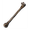
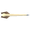
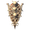
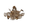

骨头
本站支持中英文站内搜索。带 ↗ 的链接指向外部网站；各页来源版本见页脚。
骨头 可能指：
 白骨碎片，主要从骷髅获取的制作材料。
白骨碎片，主要从骷髅获取的制作材料。 灰烬之骨，用于许多灰烬之地阶段武器和护甲的物品。
灰烬之骨，用于许多灰烬之地阶段武器和护甲的物品。
枯骨，可在淤泥废料堆、沉没墓穴和沼泽宝箱找到。
骨制弩箭，弩用弹药。
枯骨塔盾，第二种塔盾。
邪骨堆，位于墓穴、沼泽墓地及雪山塔楼中的生物生成器。
 | 本消歧义页列出同名条目。若通过内部链接来到这里，可以修改该链接，让它直接指向所需条目。 |
Bone may refer to:
- Bone Fragments, a crafting material primarily obtained from Skeletons.
- Charred Bone, an item used for many of the Ashlands-tier weapons and armor.
- Withered Bone, an item found in Muddy Scrap Piles, Sunken Crypts, and Swamp chests.
- Bone Bolt, ammunition for crossbows.
- Bone Tower Shield, the second tower shield.
- Evil Bone Pile, a creature spawner found in Burial Chambers, Swamp Graves, and Mountain Towers.
| This disambiguation page lists articles associated with the same title. If an internal link referred you here, you may wish to change the link to point directly to the intended article. |